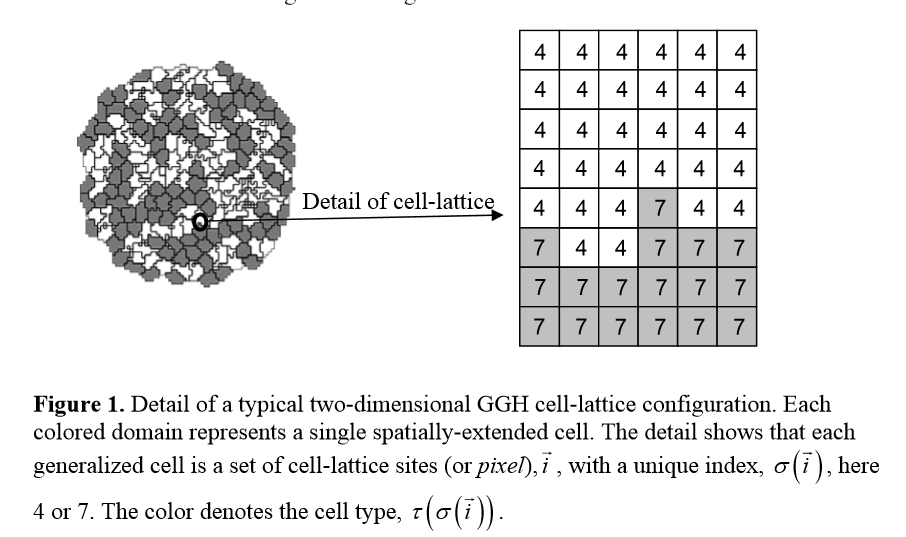
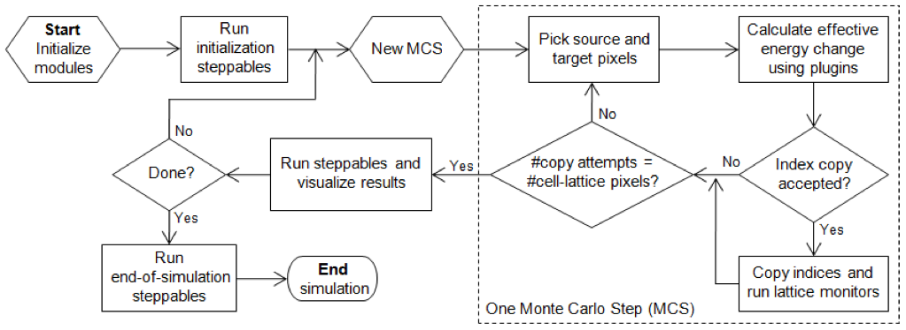

CompuCell3D是用于模拟生物复杂性问题的三维C ++软件问题求解环境，集成了多个数学[形态发生]模型。其中包括细胞Potts模型（CPM），该模型可以对细胞聚类，生长，分裂，死亡，粘附以及体积和表面积约束进行建模；以及偏微分方程求解器，用于模拟外部化学场的反应-扩散和用于分化的细胞类型自动机。通过集成这些模型，CompuCell3D可以对细胞对外部化学场（例如分泌或吸收）的反应以及诸如趋化性和趋触性的反应进行建模。
CompuCell3D Wikipedia
2004年介绍CompuCell的一篇文章发表在Bioinformatics上，题目是：CompuCell, a multi-model framework for simulation of morphogenesis.（当时还叫CompuCell，是二维计算框架）软件中包括一些独立的模块用来模拟基因调控网络和细胞机制的相互作用，包括形态发生蛋白的合成和扩散、细胞黏附、趋触性、趋化性。
CompuCell 的三个主要组成部分是描述细胞和ECM行为的细胞Potts模型（CPM）、描述可扩散形态因子的反应-扩散（RD）模块和遗传调控网络和分化的组合ODE/状态模型。细胞Potts模型可以对细胞聚类，生长，分裂，死亡，粘附以及体积和表面积约束进行建模，偏微分方程求解器用于模拟外部化学场的反应-扩散。随后它很快发展为三维模型，并被许多研究者使用。
Glazier-Graner-Hogeweg (GGH)方法
背景
在此之前已经发展了对单个细胞的模拟方法，而由于组织、器官层面的模拟往往涉及大量的细胞，如何简化和适应单细胞模拟以有效地应用于数百万细胞集合体的模拟成为挑战。一种方法是忽略细胞个体，例如将组织建模为具有整体机械特性和分子反应网络的连续体，这对于描述致密组织和非细胞材料比较有效，比如骨、细胞外基质、流体等，不适合用于描述细胞迁移或重组。
另一种方法是多细胞模拟，（phenomenologically现象地） 将数百万基因产物的相互作用归纳为几种细胞行为：迁移、分裂、死亡、分化、改变形状、施加力、分泌和吸收化学物质、电荷改变等。GGH方法就是一种多细胞模拟方法，它通过定义generalized cells（本文里暂且翻译为广义细胞）实现多尺度模拟，广义细胞可以代表细胞簇、单个细胞、单个细胞的一部分或者非细胞物质的一个子区域。这种灵活的定义使得模拟能够适用于从细胞内到连续体的多个尺度。
因为使用了规则的网格，GGH模拟通常比在相同空间粒度和建模尺度下运行的等效有限元（FE）模拟要快，从而可以在网格上模拟数以万计的广义细胞。
相关概念
GGH模拟包括一系列对象及它们之间的相互作用和动力学，同时包括适当的初始条件。GGH模拟中的对象一般是二维或者三维下的广义细胞（generalized cells）或场（fields）。
广义细胞位于一个单元网格里，代表一个细胞或者部分细胞或者非细胞材料。每一个格点用一个整数向量i表示，每个格点i都有一个细胞索引σ(i)，细胞的类型用τ(σ(i))表示。每个广义细胞有一个唯一的索引，但可能包含多个格点。多个广义细胞可能有相同的细胞类型。每个广义细胞有一个属性列表，例如细胞类型、表面积和体积，以及更多描述细胞状态的复杂属性、生物化学相互作用的网络等。
场是连续可变的浓度，每个格点有一个浓度值。场可以表示以一种扩散的化学物质、非扩散的细胞外基质等。多个场可以组合起来表示有纹理的材料，例如纤维。
相互作用的描述和动力学定义了GGH对象在生物学和物理上的行为方式。广义细胞的行为和相互作用主要体现在有效能量（effective energy）中，它决定了广义细胞的形状、运动性、粘附性以及对细胞外信号的反应。有效能量将真实能量（如细胞-细胞粘附）和模拟能量（如细胞对梯度场的反应）结合起来。在有效能量上增加限制条件可以描述许多其他细胞特性，如渗透压、膜面积等。

GGH在CompuCell中的实现
细胞网格的演变是通过广义细胞在细胞骨架驱动下运动而试图移动其边界得来的。这种边界移动称为index-copy attempts，能够改变有效能量，根据有效能量的变化ΔH，利用一个接受函数接受或拒绝每次尝试。非平衡统计物理学表明，细胞网格会逐渐演变达到局部有效能量最小。典型的GGH实现了一个经典随机蒙特卡洛模式演变动力学的修改版本，称为Metropolis dynamics with Boltzmann acceptance。一个蒙特卡洛步骤（MCS）包括每个格点各一次index-copy attempts。
辅助方程描述了细胞对扩散物质和细胞外物质的吸收和分泌（如它们与场的相互作用），细胞内的状态变化，有丝分裂和细胞死亡。通常，状态变化通过改变有效能量中的参数（例如，细胞靶的体积或类型或特定细胞粘附分子的表面密度）来影响广义细胞的行为。
场也会由于分泌，吸收，扩散，反应和衰减而演化，这些演化采用偏微分方程（PDE）描述。尽管有可能用到复杂的耦合PDE模型，但大多数模拟只需要分泌，吸收，扩散和衰减，而反应是在单个广义细胞内进行的，由常微分方程（ODE）描述。细胞的移动和局部扩散常数（或各向异性ECM中的扩散张量）的变化意味着扩散发生在边界条件移动且通常具有对流的环境中。
初始条件指定了单元格的初始配置、场、细胞及及其与辅助方程相关的内部状态，以及完整描述模拟所需的任何其他信息。
流程图如下：

CompuCell软件实现
与专门的研究代码不同，CompuCell3D是一个仿真环境，使研究人员可以快速构建和运行可共享的基于GGH的仿真。
CompuCell3D对非程序员比较友好，提供了可视化工具、用于定义模拟的可扩展标记语言（XML）接口以及通过专用模块扩展框架的功能。另外还可以使用Python脚本访问CompuCell3D的C ++计算内核，从而使用户无需使用C或C ++等低级语言进行编程即可创建复杂的仿真。与典型的研究代码不同，更改模拟不需要重新编译CompuCell3D。
用户使用CompuCell3D XML（CC3DML）配置文件和/或Python脚本定义模拟所需的变量。CompuCell3D读取并解析CC3DML配置文件，并使用它定义基本的仿真结构，然后初始化适当的Python服务（如果已指定），最后执行基本的仿真算法。
CompuCell3D是模块化的，每个模块都执行一个特定的任务。计算有效能量项或监视单元格上的事件的模块称为插件，用于计算有效能量变化和对index copy 做出反应。每次像素index-copy attempts都会调用有效能量计算，而每当发生index copy时都会运行单元格监视插件。由于插件是CC3D中最常被调用的模块，因此大多数插件都使用C ++进行编码以提高速度。一些插件可能依赖于其他插件，存在隐含的插件依赖项时，CompuCell3D会自动加载并初始化依赖插件。
除了插件外，CompuCell3D还定义了称为steppable的模块，这个模块不是在像素上运行的，而是在细胞上运行的。这些模块在每次Monte Carlo Steps后重复运行，或者在模拟开始或结束时运行一次。该模块通常定义初始条件，更改细胞状态，更新场或输出中间结果。大多数steppable模块是用Python实现的。CC3D内核支持并行计算（通过OpenMP），从而大大提高了在多核计算机上的运算速度。
CompuCell3D包括图形用户界面（GUI）和可视化工具CompuCell Player（也称为Player）。Player是基于Qt的图形界面，用户可以从Player中打开CC3DML配置文件和/或Python文件，然后单击“播放”按钮以运行模拟。Player允许用户在模拟运行时实现多个2D或3D的关于广义细胞，场或各种矢量图的可视化，并自动保存它们以进行后处理。
Reference
- CompuCell3D 维基百科 https://en.wikipedia.org/wiki/CompuCell3D
- CompuCell3D 官方网站 https://compucell3d.org/FrontPage
- CompuCell3D Documentation https://compucell3d.readthedocs.io/en/latest/index.html
- Swat, Maciej H., et al. “Multicell simulations of development and disease using the CompuCell3D simulation environment.” Systems Biology. Humana Press, 2009. 361-428.
- Izaguirre, Jesús A., et al. “CompuCell, a multi-model framework for simulation of morphogenesis.” Bioinformatics 20.7 (2004): 1129-1137.